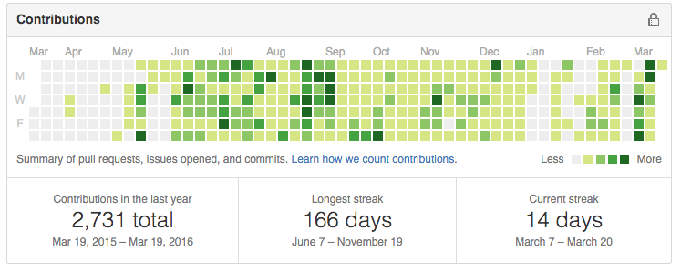
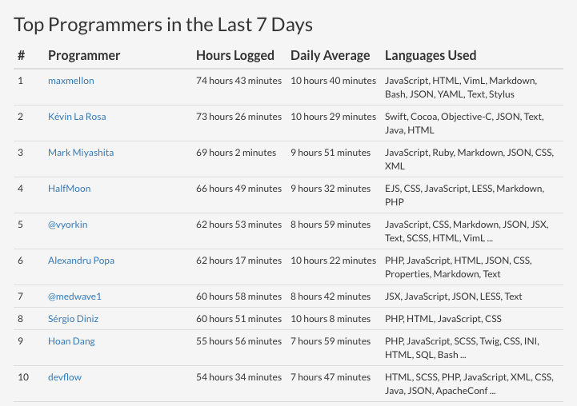

MaxMellon
Kento Tsuji
Kento Tsuji

| Name | Kento TSUJI : MaxMellon |
|---|---|
| University | 香川大学工学部 電子・情報工学科 |
| Laboratory | 富永研究室 |
| Grade | 学部3年(2012入学:4年次) |

| OS | Ubuntu, OSX, Windows7 |
|---|---|
| Shell | zsh |
| Editor | Vim |
| Language | Ruby, C#, ECMAScript2015, PHP, Java, C++11/03, C, CoffeeScript, HTML5, CSS3 |
| Modeling | UML, SysML |
| Framework | Fluxible, Ruby on Rails, .NET4.5(WPF, MVVMLightToolkit), Laralvel5.1 |
| Platform | electron |
| Architecture | Flux |
| IDE | Vim, VisualStudio, Eclipse |

| リポジトリ | https://github.com/MaxMEllon/comelon |
|---|---|
| 概要 | ニコニコ生放送 コメントビュアー |
| 言語 | javascript [es6] |
| ライブラリ | react |
| フレームワーク | electron |
| アーキテクチャ | flux |
| badges |


|
|
electronアプリケーションの開発に初挑戦 webpackやbabelの基本的な使い方の習得を目標 また，jsでのテストの行い方や，CI上における electronアプリのテストにも挑戦している |
|

| リポジトリ | https://github.com/MaxMEllon/nyaovim-music |
|---|---|
| 概要 | Embedded simple mp3 player for Nyaovim editor |
| 言語 | Vim script, javascript |
|
開発中にvimの中から音楽プレイヤーの操作ができれば， 個人的に嬉しいと前々から思っていたので， Nyaovim-pluginとして実現してみました． 割り込み処理の影響を受けないようにしたいので， 音楽再生部はchild_processを用いて， 別プロセスにしています．具体的には， afplayをspawnしています． |
|

| リポジトリ | https://github.com/MaxMEllon/Nyaovim-nicolive-comment-viewer |
|---|---|
| 概要 | nicolive comment viewer on Nyaovim |
| 言語 | Vim script, javascript |
| 記事 | http://qiita.com/maxmellon/items/1d1f341543242f091851 |
|
作成時，Nyaovim作者以外にpluginを作っている人がいなかったので， 腕試し的な意味で開発に挑戦 |
|
| リポジトリ | https://github.com/MaxMEllon/AigisCapture |
|---|---|
| 概要 | 千年戦争アイギスの画面のスクリーンショットを素早く取るためのアプリケーション |
| 言語 | C#/XAML |
| ライブラリ | OpenCVSharp |
| フレームワーク | .NETFrameWork4.5 |
| アーキテクチャ | MVVMLightToolkit |
| badges |


|
|
友人に依頼されて作成 AppVeyorで自動buildとパッケージ化をし， 常に最新版のアプリ ケーションを ダウンロードできるようにしている ゲーム画面をウィンドウ内からOpenCVを用いて検索し， 一致率が高かった場所を起点にスクリーンショットをとっている |
|

| リポジトリ | https://github.com/MaxMEllon/LivenPepper |
|---|---|
| 概要 | 開発ライフをもっと和やかにする "LivenPepper" |
| 言語 | python |
| 投稿先 | Mashup Awards 11 ハッカソン予選大阪 #MA11 |
| 結果 | 企業賞(DataSpider賞)受賞 |
| メンバー | @gembaf(企画・開発・デザイン) |
|
開発者は，常に画面上のコードを眺めており，目のリソースは限られています． そんな中で，動きと音，声でpepperが開発に役立つ情報を逐次教えてくれます． 具体的には，CircleCIのビルドステータスに変化があれば，pepperが教えてくれます． 成功した時は，喜び 失敗した時は，悲しんだり励ましてくれたりします． |
|

| リポジトリ | https://github.com/MaxMEllon/vim-tmng |
|---|---|
| 概要 | tmng format to highlight for vim |
| 言語 | Vim script |
| 記事 | オレオレテキストドキュメント用プラグイン vim-tmngつくった |
|
SLP(1) や研究室の議事録でよく使われるドキュメントフォーマットである， ”TmngDocument(たまねぎドキュメント)” を Syntaxハイライトするvimプラグインです． TmngDocumentの特徴としては，■, ●，◎，○などのマーカーを多用します． (1)SLPとは、香川大学工学部のプログラミングサークルである |
|

| リポジトリ | https://github.com/MaxMEllon/DarkNess |
|---|---|
| 概要 |
大量の画像をzipで簡単にアップロードでき, ストレスフリーに閲覧できるサービス |
| 言語 | Ruby |
| フレームワーク | Ruby on Rails |
| frontのみ担当 | |
|---|---|
| リポジトリ(front) | https://github.com/SLP-KBIT/Attereco-Front |
| リポジトリ(back) | https://github.com/SLP-KBIT/Attereco-Back |
| 言語 | flont:C#/XAML, back:Ruby |
| フレームワーク | flont:.NETFrameWork4.5, back:Ruby on Rails |
|
学生書がfelicaなのを活用したアプリケーション クライアント側のアプリケーションが常にフェリカリーダーとポーリングし カードを検出したときにカード情報をバックエンドにpost バックエンドは，大学用googleアカウントにOAuth認証でログインし OAuthは，バックエンド作者が開発したLinkUS-OAuthを活用 カードの情報とひも付けを行い，ログイン情報を管理 |
|
| vim-cmus | https://github.com/azadkuh/vim-cmus |
|---|---|
| agratian |
https://github.com/sukesan1984/agrarian
コントリビューターからメンバーへ issue投稿サイト，slack用botなど作成 |
| unite-rails-fat | https://github.com/iyuuya/unite-rails-fat |
| Shoko | https://github.com/sai-lab/shoko |
| abilitysheet | https://github.com/8398a7/abilitysheet |
|
顔認証可能な画像蓄積APIサーバー |
|
|---|---|
| 言語 | PHP5.6 |
| フレームワーク | Laralvel5.1 |
Github 166day Contribution Streak 達成
wakatime ウィークリー 開発時間ランキング1位
